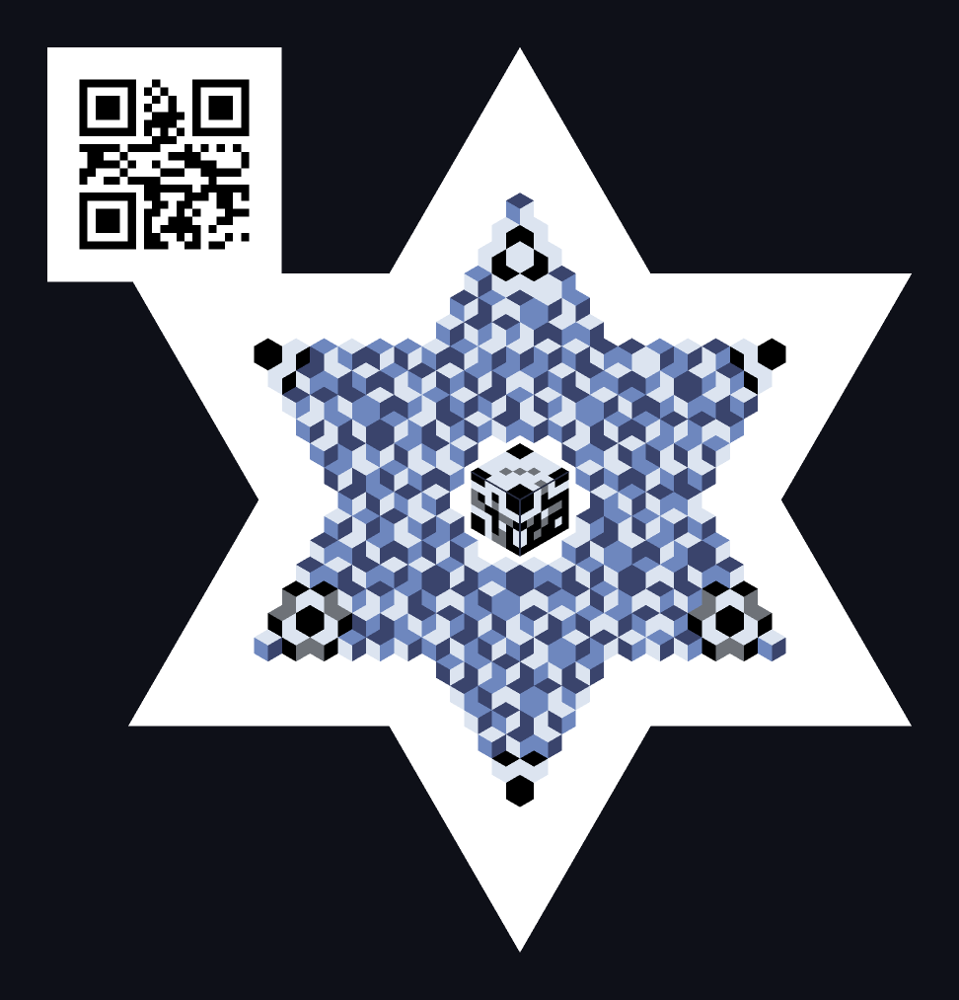

O QR lê-se bem.
Só nunca foi bonito
Cartazes, embalagens, cartões de visita — o QR está em todo o lado, e pousar um quadrado a preto e branco sobre um design trabalhado durante semanas sempre custou. Mas o QR tem este aspeto por uma razão: é o que se constrói quando uma câmara e um processador de 1994 têm de conseguir lê-lo.
Essas restrições caíram em grande parte. As câmaras dos telemóveis e o poder de cálculo têm folga. Por isso, em vez de perseguir apenas o reconhecimento, essa folga foi gasta em valer a pena olhar. Não é um substituto do QR: é um lugar ao lado.
Porquê agora
O QR foi a resposta certa para o seu tempo. Dois valores, módulos quadrados, padrões localizadores grandes — cada uma dessas escolhas existia para que mesmo uma câmara fraca conseguisse ler. Com essas restrições, abdicar da estética era racional.
Essa premissa mudou. As câmaras dos telemóveis de hoje não se comparam, e o processamento de vídeo em tempo real corre dentro de um navegador. Essa folga podia ir para a densidade — ou podia ir para o aspeto. É por isso que este formato existe.
Em troca, abdicou-se da densidade. As células em losango aproveitam pior a área do que os módulos quadrados. Este formato não compete em densidade. Se for preciso levar muito, a ferramenta certa é o QR.
Quatro tipos
Escolha consoante o sítio onde vai ficar. Os três partilham o mesmo contrato de dados e diferem apenas na silhueta. Todos os códigos abaixo contêm https://tl.estre.so.

Type Y — cubo único
Três faces n×n. Uma marca de uma só peça, boa para sinalética e merchandising.

Type O — campo hexagonal
A forma base. As células em losango estendem-se à volta de um padrão localizador central.

Type A — silhueta triangular
Um núcleo hexagonal mais remendos de canto, formando um triângulo equilátero.

Type K — Hexagrama
Um triângulo unido à sua imagem de 180°. Maior carga útil com o mesmo k.
A carga útil líquida é para ECC-M. Os quatro tipos podem levar ao lado um QR de reserva, de modo que reste um caminho onde um código TL não possa ser lido.
Como funciona
1. Célula = três losangos
Uma pavimentação rhombille divide cada célula hexagonal nas faces T, L e R.
2. Ordem = símbolo
Ordenar as três luminâncias dá 3! = 6 resultados — um dígito em base 6.
3. 3 dígitos = 1 símbolo
Reed–Solomon sobre o corpo primo GF(211) corrige os erros.
O que isto liberta
Invariante a transformações monótonas. As variações de iluminação global, o gama e o mapeamento tonal de uma impressora são monótonos: não conseguem trocar uma ordem. Se a ordem sobrevive, o valor sobrevive.
O renderizador fica livre. O contrato de dados é apenas «a ordem entre as faces, mais uma separação mínima». Dentro disso, a cor, a textura, os gradientes por face e a animação estão todos abertos. É essa liberdade que dá sentido ao formato.
Mas nada fica bonito sozinho. O que se abre é o contrato, não o resultado. O que desenhar lá dentro continua a ser trabalho seu.
Scanner — ponto de situação
O descodificador funciona. Os quatro tipos leem-se a partir de fotos de dispositivos reais; falta subir a precisão e a velocidade. Cada tempo abaixo é uma descodificação de uma foto fixa tirada com um telemóvel real, não o tempo até à primeira fixação nem uma taxa de êxito ao vivo.
| Tipo | Fotos reais descodificadas | Uma descodificação em foto fixa | Validação ao vivo |
|---|---|---|---|
| Type Y — cubo único | 9 / 16 | ≈ 3.4 s | faltam mais medições |
| Type O — campo hexagonal | 29 / 48 | ≈ 2.0 s | faltam mais medições |
| Type A — silhueta triangular | 18 / 19 | ≈ 3.2 s | faltam mais medições |
| Type K — hexagrama | 18 / 27 | ≈ 3.4 s | faltam mais medições |
| Variante QR central (os quatro tipos) · 2026-08-13 | 8 / 9 | — | faltam mais medições |
Uma descodificação de uma única foto fixa. O Type O é agora o mais rápido; A, K e Y ficam próximos atrás. ⚠ Uma versão anterior desta página dizia que o Type Y era o mais rápido: era uma amostra de 9 fotos e, com uma amostra mais ampla, a ordem inverteu-se. Não leia isto como tempo de primeiro engate em direto.
O tempo de uma descodificação em foto fixa não prevê a sensação da leitura ao vivo. Nas primeiras medições em dispositivo real, um fotograma rápido podia ainda assim dar uma primeira fixação lenta quando eram precisos muitos fotogramas antes de um bem-sucedido, e a ordem dos tipos diferia desta tabela de foto fixa. Esse registo abrange um só dispositivo e uma amostra pequena, pelo que ainda não atribuímos uma classificação de uso ao vivo.
As condições de captura também pesam. Na medição, 9 píxeis por célula foi o limite inferior de descodificação e, à mesma distância, uma objetiva ultra grande-angular enquadra o código mais pequeno e desce abaixo dessa linha (ultra grande-angular 7.6 px falhou / grande-angular 9.1 px conseguiu). É por isso que o scanner oferece a escolha da objetiva.
Na variante de QR central, um bloco QR substitui o padrão localizador central. Os seus padrões dão o ponto de entrada de posição e orientação com que se descodifica o corpo TL em redor. O gerador usa agora este caminho validado por predefinição nos tipos O e A. Por predefinição, o QR continua a ser uma reserva com uma ligação para o leitor; a carga útil fica no corpo TL.
Medido a 2026-08-26 · amostra de 110 fotos (cada uma tentada a 960 · 1440 px de lado curto). ⚠ A maior parte da amostra está fotografada a partir de um ecrã: não são números de impressão nem de colocação real. Além disso, 123 dos 233 fotogramas do corpus são capturas-limite guardadas precisamente por ainda não descodificarem — ficam aqui excluídas. Só a linha do QR central vem da ronda anterior de 2026-08-13.
Especificação e implementação
A especificação do formato e a implementação de referência estão publicadas sob a Licença Apache 2.0. JavaScript simples, sem cadeia de compilação, zero dependências em execução — funciona como um único ficheiro HTML.
Implementar apenas o descodificador já conta como implementação conforme. A adoção começa pelo lado que lê.
| Site | Papel | Estado |
|---|---|---|
| tlcube.estre.so | Gerador | ativo |
| tlscan.estre.so | Scanner | ativo — estado › |
| tl.estre.so | Site de apresentação | está aqui |